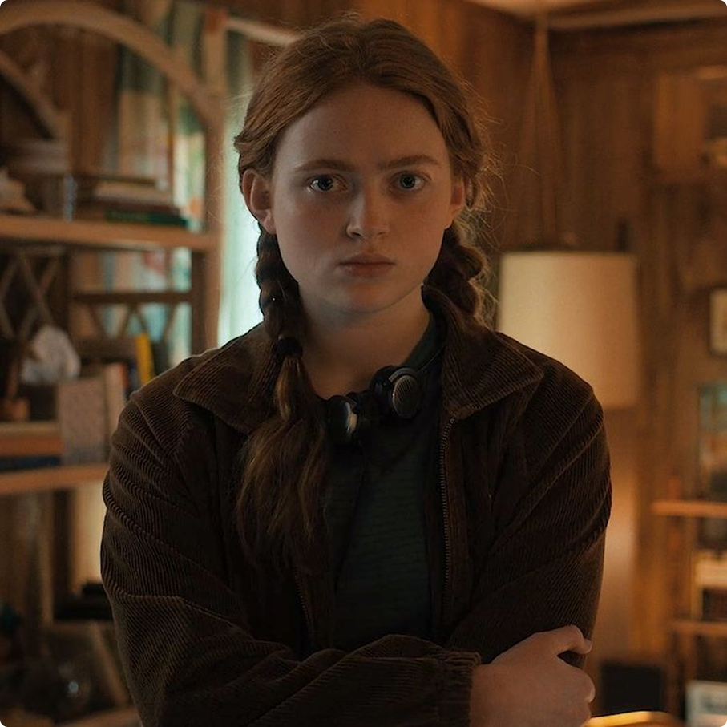
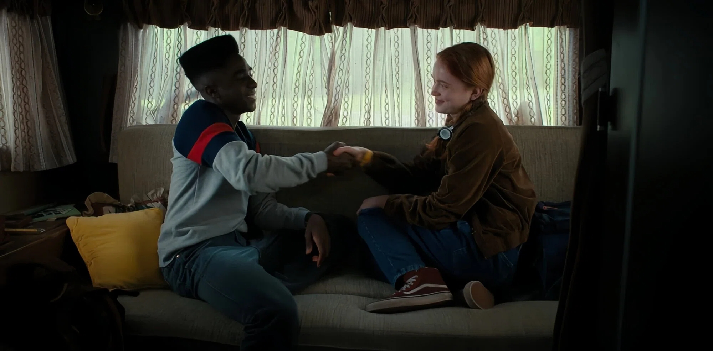

Отстранённость после трагедии

В четвёртом сезоне «Очень странных дел» Макс
Мэйфилд заметно отдаляется от друзей и окружающего мира.
Она вроде бы остаётся частью компании, но ведёт себя
так, словно живёт отдельно от всех: постоянно
в наушниках, молчаливая и закрытая. На первый
взгляд это выглядит как обычная реакция на гибель Билли.
Однако сериал показывает не просто горе, а более сложное
состояние — вину выжившего.
Сложная потеря

Важно, что сериал не идеализирует Билли после его смерти.
Он не превращается в «хорошего»
персонажа, которого все обязаны оплакивать. Его жестокость,
агрессия и травмы остаются частью его личности. Именно
поэтому потеря оказывается для Макс настолько болезненной.
Она потеряла не идеального брата, а сложного
и пугающего человека, к которому испытывала
противоречивые чувства. Такая утрата не приносит ясного
завершения. Вместо этого остаётся спутанный клубок
эмоций — вина, злость, привязанность и сожаление.
Депрессия без слов
Депрессия Макс показана прежде всего через её поведение. Она
избегает разговоров, не делится переживаниями
и отстраняется даже от тех, кто пытается ей помочь.
Наушники становятся для неё своеобразным барьером между ней
и внешним миром.


Письма, которые она пишет друзьям, выглядят как тихое прощание
с жизнью. Сериал избегает длинных объяснений, потому что
депрессия редко выражается в чётких словах. Чаще она
проявляется в молчании, усталости и ощущении собственной
бесполезности.
Музыка и поддержка
Сцена с песней Running Up That Hill становится
поворотным моментом. Музыка выступает якорем, возвращающим Макс
к реальности и напоминающим ей о связи
с друзьями и прошлой жизнью. При этом она
не спасает себя в одиночку. Её вытаскивают
воспоминания и поддержка близких. Сериал ясно показывает:
выбраться из депрессии только силой воли
невозможно — человеку нужна помощь.
Вывод
Финал сезона оставляет Макс между жизнью и смертью. Это
жестокое, но честное решение. Травма не исчезает после
одного героического момента, и победа над монстром
не означает мгновенного исцеления. Макс остаётся жива,
но не исцелена. Именно в этом заключается одна
из самых сильных и зрелых тем сериала: главный враг
героев — не только монстры из Изнанки,
но и боль, которая остаётся внутри человека.
